Ortodontia — Invisalign
Correção do alinhamento dos dentes e mordida com aparelhos modernos e eficazes.
nova identidade
Humanidade, excelência e confiança em uma experiência odontológica diferente desde 2006.
diferenciais
"Há clínicas que atendem. E há instituições que fazem odontologia de verdade."
Humanidade, excelência e confiança em uma experiência odontológica diferente desde 2006.
Nesses 20 anos, o lado humano se tornou um dos principais pilares da Sabre: mais do que transformar sorrisos, construímos relações baseadas em cuidado, confiança e propósito.
Agendar consulta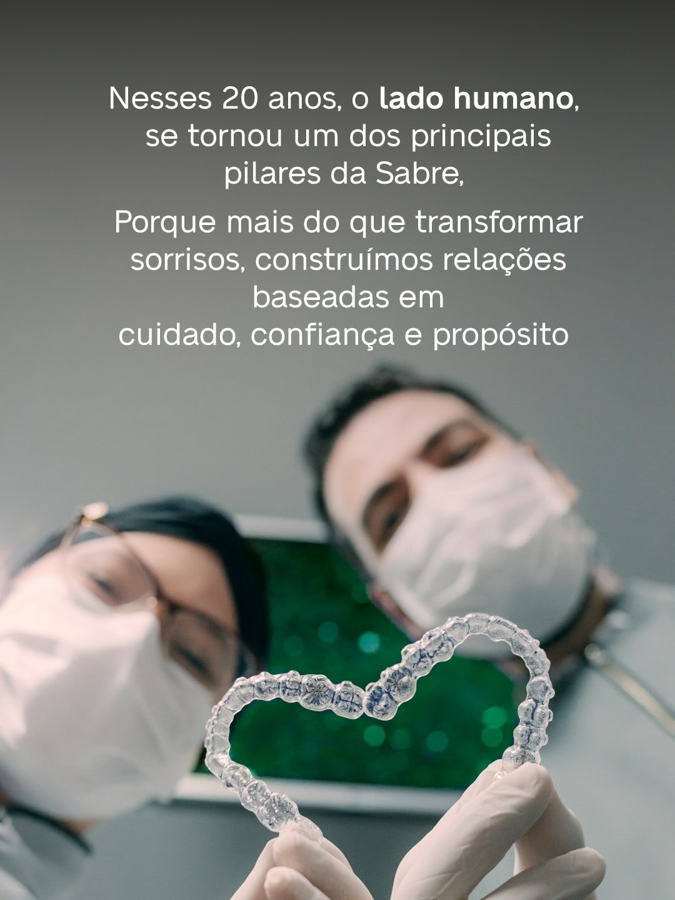
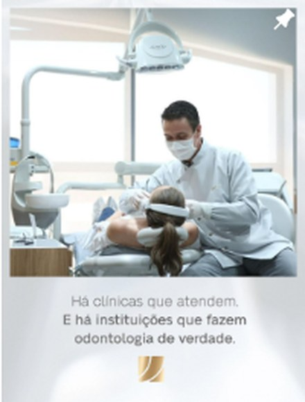
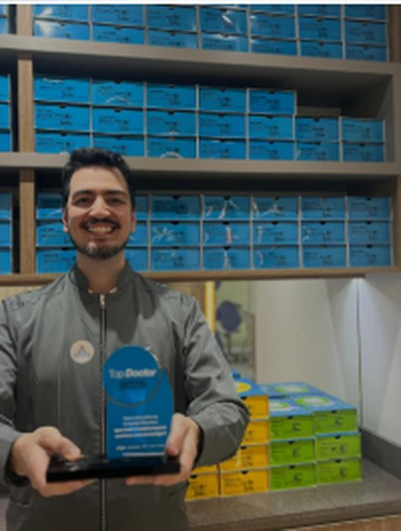
tratamentos
Correção do alinhamento dos dentes e mordida com aparelhos modernos e eficazes.
Solução definitiva para reposição de dentes perdidos, com durabilidade e funcionalidade natural.
Tratamento estético para correção de imperfeições e melhoria da aparência do sorriso.
Remove manchas e proporciona um sorriso mais branco e brilhante.
Diagnóstico e tratamento restaurador com técnicas modernas.
Tratamento de canal com conforto e precisão.
Próteses funcionais e estéticas, sob medida.
Tratamento da gengiva para a saúde bucal completa.
Diagnóstico por imagem de última geração.
resultados reais
Uma amostra dos resultados acompanhados pela equipe Sabre Odonto.
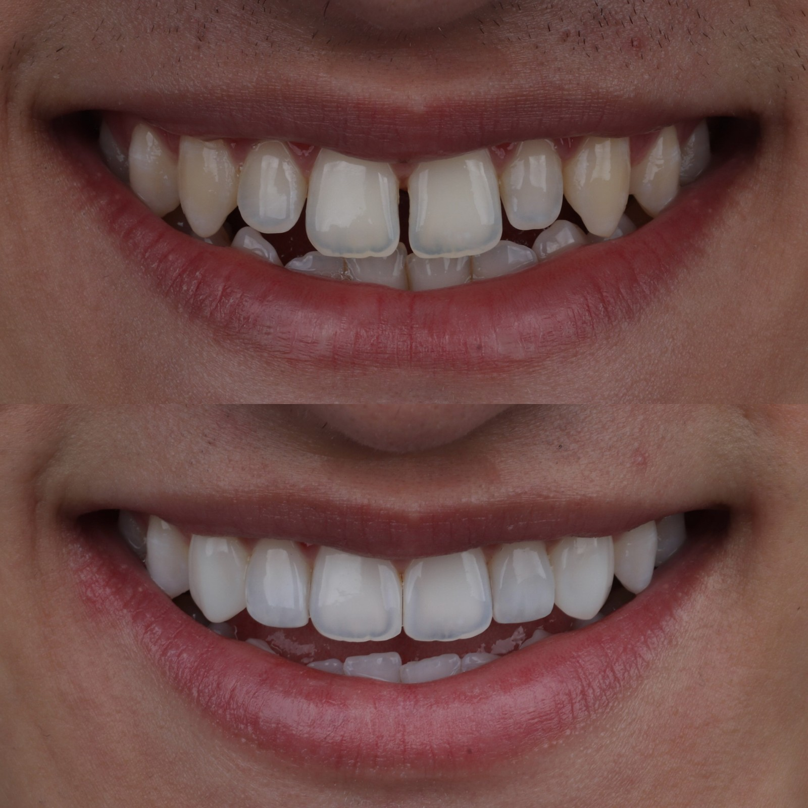
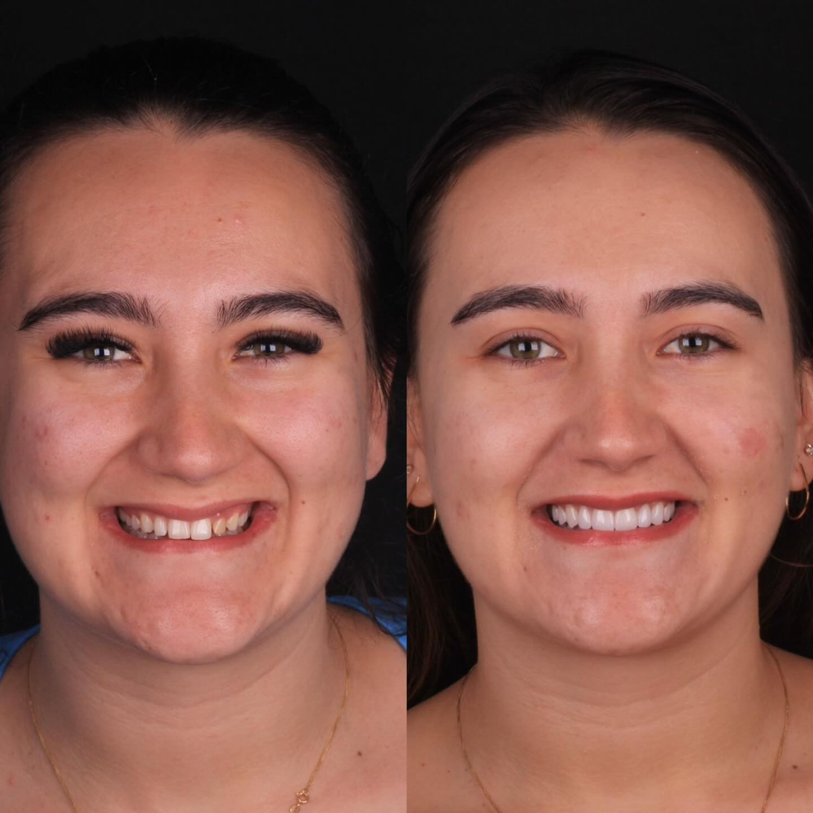
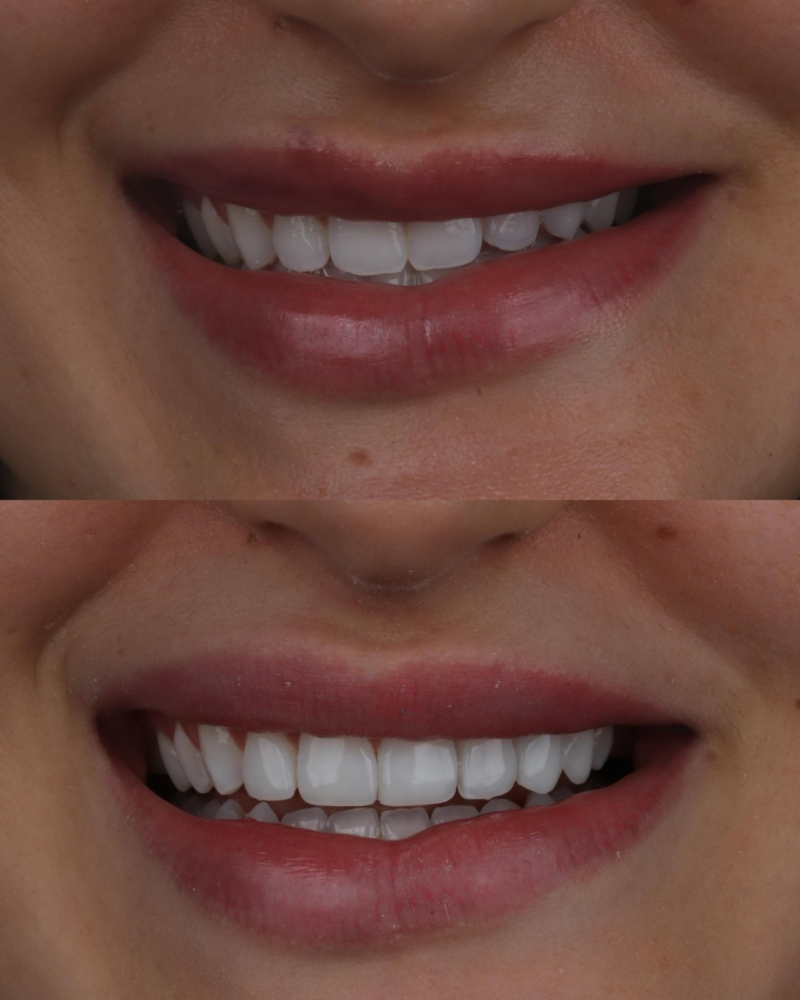
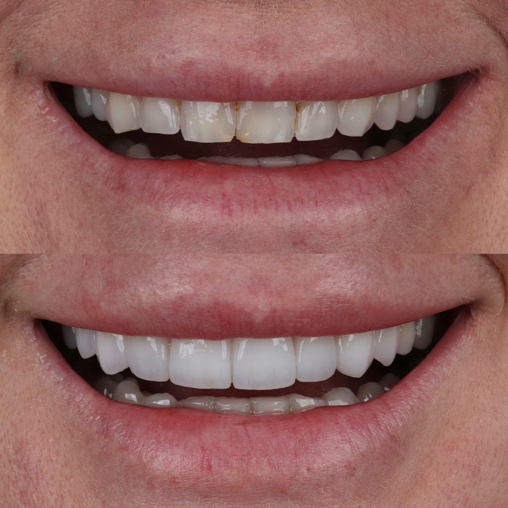
nossos sócios
Na Sabre, você sabe quem vai cuidar de você: pelo nome, pela história, pela especialidade.
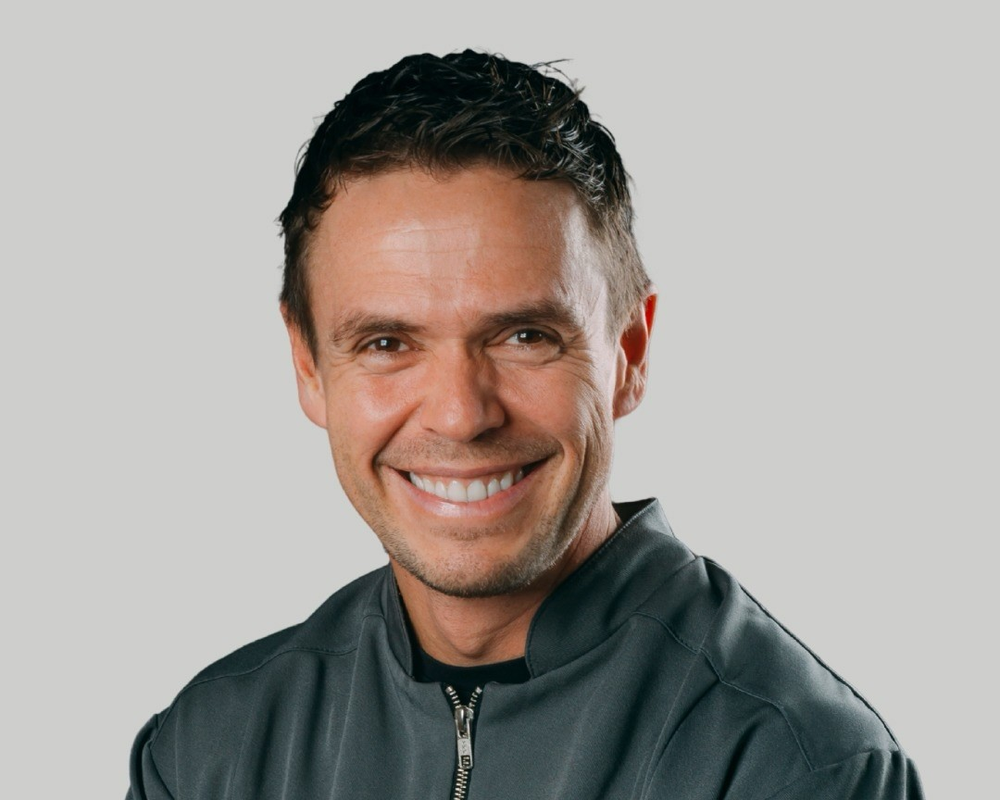
Sócio fundador da SABRE. Cirurgião. Reabilitação oral.
"Só existe um jeito de fazer: o certo."
Sócia fundadora da SABRE. Diretora da Clínica. Gestora.
"Olha para o todo e cuida para que a cultura esteja presente em cada decisão."
Sócio. Cirurgião, Implantes. Reabilitação oral.
"Nunca olha só o procedimento. Olha o caso inteiro."
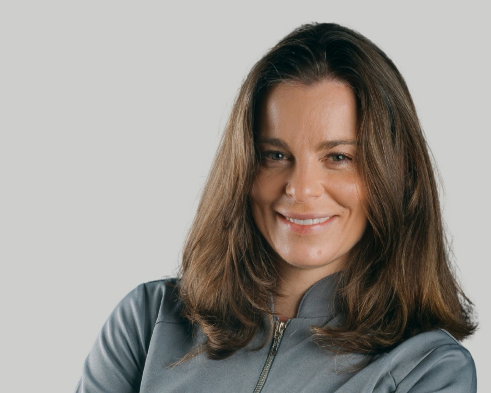
Sócia. Periodontia. Prevenção. Estética facial.
"Vê o paciente primeiro. Depois, vê a boca."
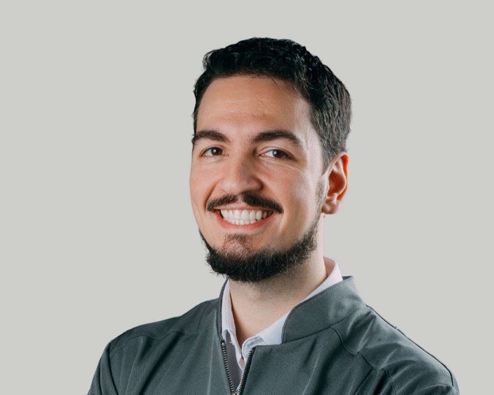
Sócio. Ortodontista.
"Entrou como dentista. Ficou porque decidiu construir junto."
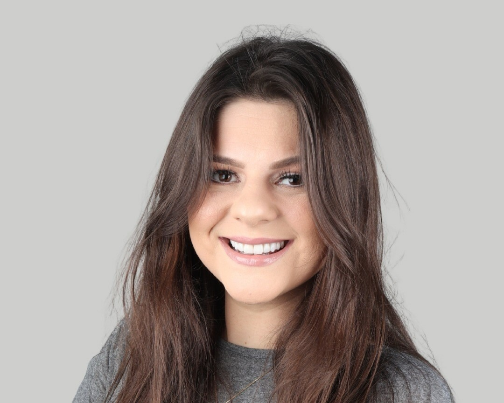
Sócia. Administradora. Gerente financeira.
"Hoje é sócia porque carrega a cultura como ninguém."
depoimentos
"Fui atendida com muito carinho pela Samantha, mesmo em meio a uma mudança de endereço. É um lugar de pessoas muito humanas, que amam sua profissão."
— Francine Albuquerque"Tive um sério problema com meu dente num sábado, e a Protética Débora e o Dr. Daniel resolveram tudo com atenção e boa vontade em pouco tempo."
— Gilcafe Souza"Ambiente aconchegante, limpeza impecável, e diversas formas de entreter os pacientes — você nem vê o tempo da consulta passar. Atendimento com dedicação do início ao fim."
— Bruna Nolde"Só gente linda, elegante e sincera! Odontologia com energia, relacionamento e conexão. Profissionais nota 1.000!"
— Raquel Bitencourtonde estamos
R. Cel. Sarmento, 1520 — Segundo andar
Centro, Gravataí/RS — CEP 94010-030
(51) 3484-6666 · (51) 3042-6656
Segunda a Sexta: 8h às 19h30
Sábado: 8h às 12h
nossa história
Ao completar 20 anos, a Sabre acredita que sua marca deveria acompanhar tudo o que evoluiu como empresa, como profissionais e como pessoas.
Nascemos como RS Saúde.
Tornamo-nos SABRE, unindo excelência no atendimento e odontologia inteligente.
A marca evoluiu para representar força, personalidade e presença.
Nova identidade: força, sofisticação e o lado humano como pilar central.
"Transformamos milhares de sorrisos, crescemos como empresa, como profissionais e como pessoas. E acreditamos que nossa marca deve acompanhar essa evolução."
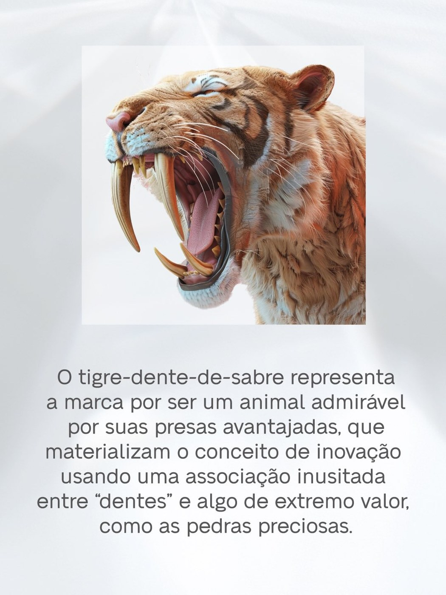
o símbolo
A nova identidade nasce inspirada no dente-de-sabre, que carrega em sua simbologia força, estratégia, dinamismo e tecnologia de ponta — e agora representa também o olhar humano que traz segurança, acolhimento e vínculo a cada paciente da Sabre.
@sabreodonto
Bastidores, campanhas educativas e a rotina da equipe Sabre.
seguidores no Instagram
publicações compartilhando bastidores e conteúdo educativo
anos de história
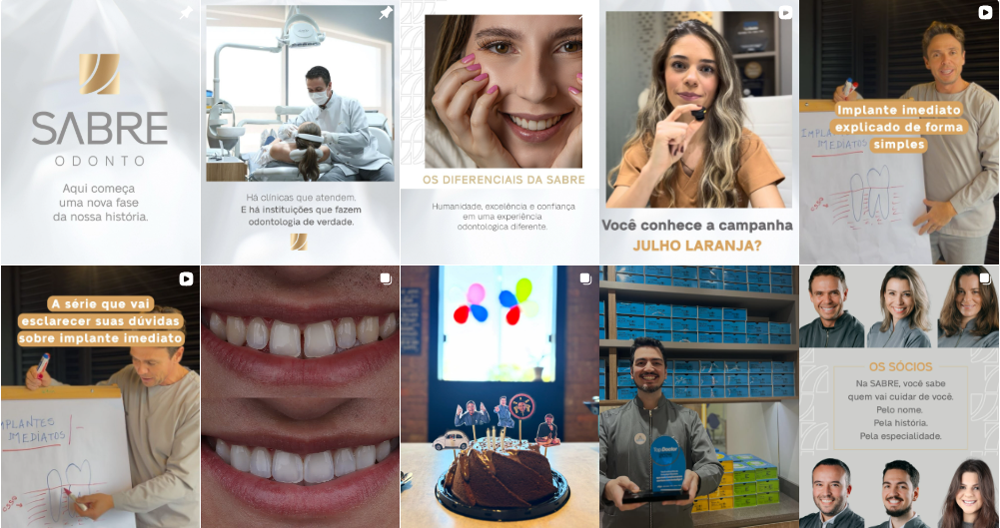